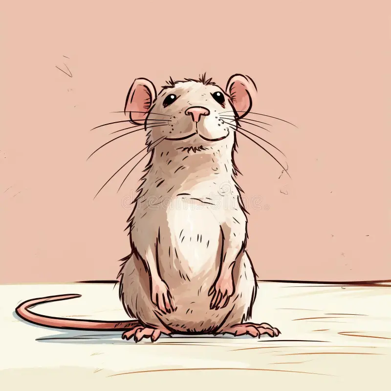

0
Public Repositories
Software Engineering Student | Personal Web Application
Time on site: 0s
A polished portfolio that combines front-end development, API integration, state management, and user interaction.

I am a software engineering student interested in web development and practical problem-solving. This final project brings together everything I built across the previous assignments into one complete personal web application.
The website focuses on clean design, responsive layout, state management, API integration, stronger validation, and a more professional user experience.
Public Repositories
Languages Used
Total GitHub Stars
Assignments Completed
A summary of the skills and concepts used to build this final application.
I used semantic HTML, custom CSS, and JavaScript to build a clean, responsive, and user-friendly interface.
The project includes dynamic API loading, saved user preferences, search, filtering, sorting, and multi-step form validation.
The application is organized for deployment, testing, documentation, and final presentation as a complete project.
To make the project feel more complete and personal, I added a visitor name feature, quick statistics, a search bar for repositories, and a more polished multi-section interface.
This section summarizes the progress made across all assignments in the course.
The first version of my portfolio website with a simple layout, projects section, and contact form.
The portfolio became interactive by adding tabs, dark mode, localStorage, and user feedback in the form.
This version introduced advanced functionality such as API integration, stronger logic, filtering, sorting, and state management.
This is the final polished version of the portfolio that brings together design, deployment, API integration, usability, innovation, and presentation readiness.
This section loads my public repositories from GitHub using an external API.
This section includes stronger validation, clear feedback, and quick access to my live project links.
Thank you for visiting my portfolio. This final version was designed to combine functionality, presentation quality, and a smoother user experience.